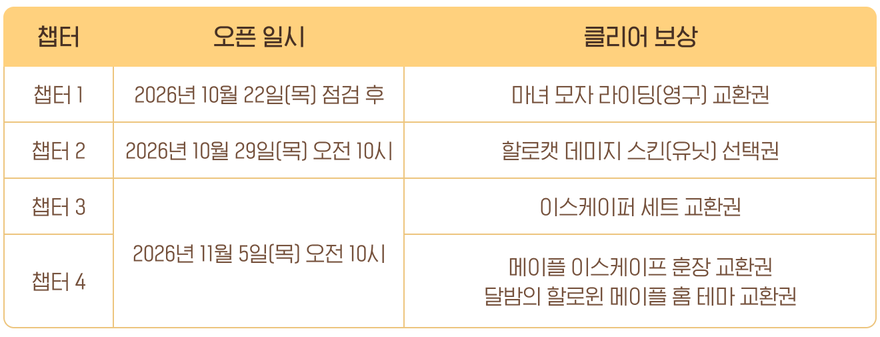
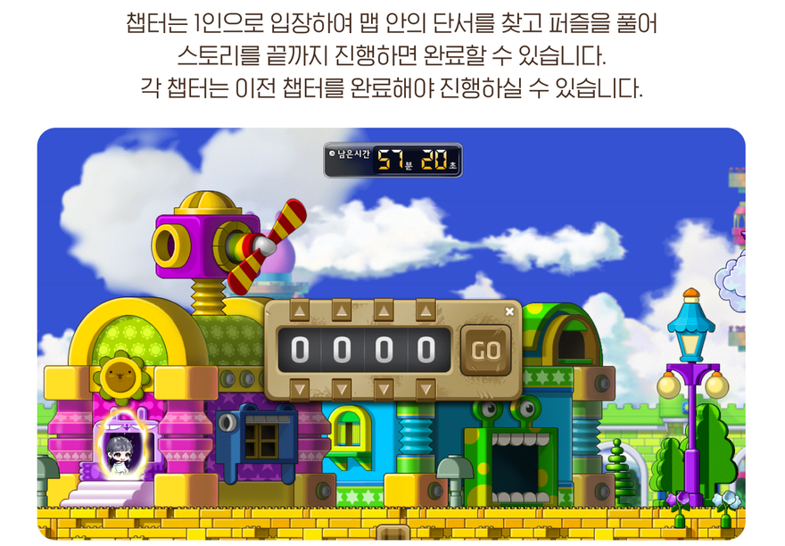
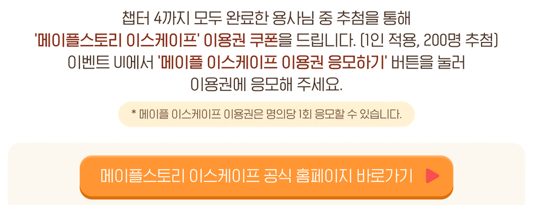
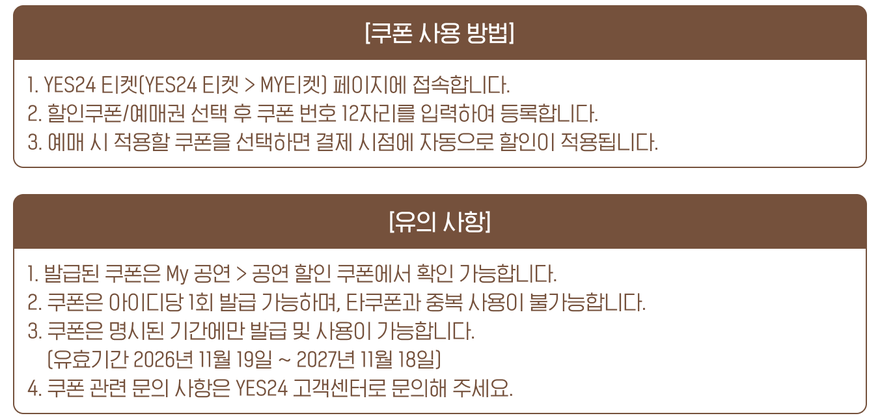
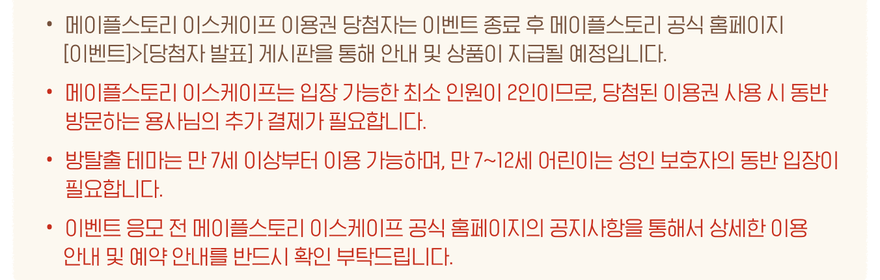
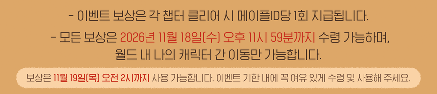

메이플 이스케이프 이용권 쿠폰 200명 추첨, 사라진 네미 응모법
메이플스토리 '메이플 이스케이프: 사라진 네미'는 오늘(10월 26일) 기준으로 챕터1만 열려 있고, 챕터2는 10월 29일(목) 오전 10시에 열려요. 이벤트 기간은 2026년 10월 22일(목) 점검 후부터 11월 18일(수) 오후 11시 59분까지인데, 챕터3과 챕터4가 11월 5일(목) 오전 10시에 한꺼번에 열리다 보니 지금 서두를 이유는 크지 않아요. 공식 안내가 그림 한 장이라 읽기 불편해서, 필요한 것만 글로 풀어 봤어요.
사라진 네미, 오늘은 어디까지 할 수 있나요?
10월 26일 기준으로 할 수 있는 건 챕터1뿐이고, 참여는 101레벨 이상 캐릭터면 돼요. 이벤트는 메이플스토리 공식 이벤트 페이지에 올라와 있고, 실제 시작은 게임 안에서 해요. 챕터는 앞 챕터를 클리어해야 다음으로 넘어가는 구조라서, 챕터1을 안 깨 두면 29일에 챕터2가 열려도 들어갈 수 없어요.
- 대상은 101레벨 이상 캐릭터이고, 제로는 스토리 퀘스트 챕터2를 완료한 캐릭터예요.
- 참여는 메이플ID당 1회예요.
- 이벤트 리스트에서 이벤트를 골라 시작 퀘스트를 끝내면, 이벤트 UI에서 챕터를 진행할 수 있어요.
챕터는 언제 열리고 뭘 주나요?
챕터1은 10월 22일 점검 후, 챕터2는 10월 29일(목) 오전 10시, 챕터3·4는 11월 5일(목) 오전 10시에 열리고, 챕터를 클리어할 때마다 교환권이나 선택권이 나와요. 날짜와 보상을 한 표로 묶으면 이렇게 돼요.
| 챕터 | 오픈 일시 | 클리어 보상 |
|---|---|---|
| 챕터1 | 10월 22일(목) 점검 후 | 마녀 모자 라이딩(영구) 교환권 |
| 챕터2 | 10월 29일(목) 오전 10시 | 할로캣 데미지 스킨(유닛) 선택권 |
| 챕터3 | 11월 5일(목) 오전 10시 | 이스케이퍼 세트 교환권 |
| 챕터4 | 메이플 이스케이프 훈장 교환권, 달밤의 할로윈 메이플 홈 테마 교환권 |

공식 그림 속 표예요. 위 표는 이걸 글자로 옮긴 거예요.
챕터3과 4가 같은 날 열려요. 챕터2만 29일에 끝내 두면 11월 5일에 3과 4를 이어서 깨고 응모까지 한 번에 마칠 수 있어요. 챕터마다 제한 시간이 60분이니, 11월 5일에 3과 4를 하루에 몰아서 한다면 두 시간 정도는 비워 두는 게 안전해요.
챕터 하나에 60분, 중간에 나가면 어떻게 돼요?
챕터마다 제한 시간은 60분이고, 시간 안에 못 깨거나 중간에 퇴장해도 다시 들어가면 진행 중이던 구간부터 이어서 할 수 있어요. 챕터는 1인으로 입장해서 맵 안의 단서를 찾고 퍼즐을 풀어 스토리를 끝까지 진행하는 방식이에요. 공식 그림에는 화면 위쪽에 '남은시간 57분 20초' 타이머가 떠 있고 네 자리 숫자를 맞추는 자물쇠도 보이는데요, 방탈출을 게임 안으로 옮겨 온 구성이 한눈에 들어와요.

남은시간 타이머와 숫자 자물쇠가 같이 나와요.
챕터를 진행하는 동안에는 전용 가방 UI를 쓰고 채널 변경 같은 일부 시스템이 제한돼요(공식 업데이트 공지). 한 번에 못 깨도 처음부터 다시 하는 구조는 아니라서, 60분이 부담스러운 분도 나눠서 도전할 수 있어요. 다만 챕터 클리어는 메이플ID당 1회라서, 같은 계정의 다른 캐릭터로 다시 깬다고 보상이 또 나오지는 않아요.
이용권 추첨은 어떻게 응모하나요?
챕터4까지 모두 클리어한 뒤 이벤트 UI에서 '메이플 이스케이프 이용권 응모하기' 버튼을 누르면 응모돼요. 응모자 중 200명을 추첨해 이용권 쿠폰을 줘요(쿠폰은 1인 1회 적용). 응모는 명의당 1회라 한 번 누르면 끝이에요. 챕터1~3까지만 끝낸 분은 응모 대상이 아니고, 챕터4가 11월 5일에 열리니 응모도 그날부터 할 수 있는 셈이에요. 이용권 응모는 챕터 보상과는 별개로 추첨을 거쳐야 받는 쿠폰이라서, 챕터 보상처럼 클리어만 하면 바로 들어오지는 않아요.

1인 적용, 200명 추첨, 명의당 1회가 이 한 장에 다 있어요.
당첨자는 이벤트가 끝난 뒤 공식 홈페이지의 [이벤트] 메뉴 아래 [당첨자 발표] 게시판에서 안내되고, 상품 지급도 그 발표에 따라 진행돼요.
당첨되면 이용권은 어디에 쓰나요?
이용권은 방탈출 '메이플스토리 이스케이프'에 쓰는 쿠폰이에요. YES24 티켓의 MY티켓에 쿠폰 번호 12자리를 등록한 뒤 예매하면 결제할 때 자동으로 할인돼요. 쿠폰 쓰는 순서는 세 단계예요.
- YES24 티켓의 MY티켓 페이지에 접속해요.
- 할인쿠폰/예매권을 고르고 쿠폰 번호 12자리를 입력해 등록해요.
- 예매할 때 적용할 쿠폰을 선택하면 결제 시점에 자동으로 할인돼요.

쿠폰 사용 방법과 유의사항이에요.
당첨보다 먼저 알아 둘 조건은 두 가지예요. 입장 가능한 최소 인원이 2인이라 함께 가는 분의 결제는 따로 필요하고, 방탈출 테마는 만 7세부터 이용할 수 있어서 만 7~12세 어린이는 성인 보호자가 같이 들어가야 해요. 혼자서는 입장할 수 없으니 같이 갈 사람을 미리 정해 두고 응모하는 편이 좋아요.

당첨자 발표 안내와 최소 2인, 만 7세 이상 조건이 한 장에 모여 있어요.
- 쿠폰은 아이디당 1회 발급되고, 다른 쿠폰과는 중복해서 쓸 수 없어요.
- 유효기간은 2026년 11월 19일부터 2027년 11월 18일까지예요.
- 발급된 쿠폰은 YES24의 My 공연 > 공연 할인 쿠폰에서 볼 수 있어요.
- 쿠폰 관련 문의는 YES24 고객센터로 하면 돼요.
당첨자 발표 날짜, 이용권으로 갈 수 있는 테마와 할인 금액, 챕터별 퍼즐 내용과 난이도는 이벤트 그림에 적혀 있지 않아요. 이용 안내와 예약 안내는 공식 안내 그림이 가리키는 메이플스토리 이스케이프 공식 홈페이지 공지에서 응모 전에 확인해 주세요. 10월 26일 기준이고, 새 내용이 나오면 글을 고쳐 둘게요.
마감 전에 꼭 챙길 건 뭔가요?
보상은 11월 18일(수) 오후 11시 59분까지 수령해야 하고, 받은 보상은 11월 19일(목) 오전 2시까지만 쓸 수 있어요. 수령한 보상은 월드 안에서 내 캐릭터끼리만 옮길 수 있어서, 보상을 받을 캐릭터는 같은 월드 안에서 미리 정해 두는 게 좋아요. 이벤트가 끝나는 11월 18일 밤에 몰려서 받으려다 놓치면 사용 기한까지 같이 날아가니 주의하세요.

수령 기한이 11월 18일, 사용 기한이 11월 19일 새벽 2시예요.
- 이스케이퍼 세트는 교환권으로 얻으면 교환 불가, 영구 아이템이에요.
- 할로캣 데미지 스킨 선택권은 할로캣 데미지 스킨(유닛)과 Ver.2(유닛) 중 한 가지를 골라요.
- 선택권으로 얻은 데미지 스킨 아이템은 유효기간이 7일이에요.
- 지금 쓰는 데미지 스킨을 저장하지 않고 선택권을 쓰면 기존 스킨을 다시 쓸 수 없게 되니, 데미지 스킨 저장 슬롯에 먼저 저장해 두세요.
- 달밤의 할로윈 메이플 홈 테마는 메이플 홈을 만든 뒤에만 쓸 수 있고, 메이플 홈은 260레벨 이상에 The Day After 스토리를 클리어한 월드에서 만들어요.
마감이 11월 18일 밤이고 사용은 다음 날 새벽 2시까지라서, 챕터4를 끝낸 날 보상부터 바로 교환해 두면 마음이 편해요. 홈 테마까지 노리신다면 메이플 홈 조건을 먼저 보시고요. 즐겁게 달려 보세요~
✔ 메이플스토리 같이 보기 좋은 내용
· 메이플스토리 월드 리프 준비 순서, 11월 5일 10시 전에 해둘 것
· 메이플스토리 강화코어 V매트릭스 활성화 강화 순서, V POINT 얻는 법부터 초기화까지
· 메이플스토리 퍼스널 버닝 켜는 법, 레벨대별 사냥터 4단계 총정리
참고한 곳 (2026.10.26 기준)
· 메이플스토리 공식 이벤트 - 메이플 이스케이프: 사라진 네미
· 메이플스토리 공식 업데이트 공지